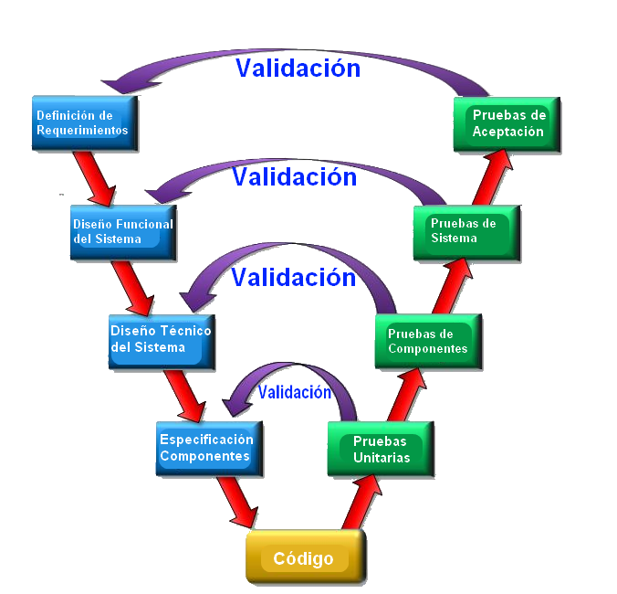
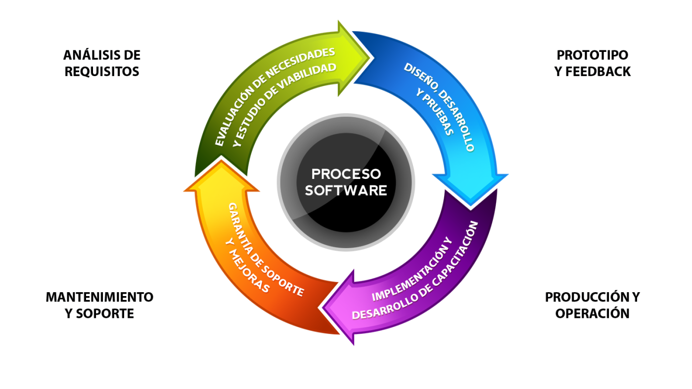

Scrum
Organiza el trabajo en períodos cortos llamados sprints. El equipo planifica tareas, revisa avances y mejora continuamente.
- Sprints
- Reuniones diarias
- Revisión de resultados
Fundamentos de calidad, procesos de desarrollo tradicionales y metodologías ágiles, con ejemplos prácticos y herramientas interactivas para entender cómo se hace, no solo qué es.
Conceptos clave, métricas, estándares ISO 9126/25000 y técnicas de aseguramiento de calidad.
Ir a la sección →SDLC y modelos tradicionales: cascada, en V, iterativo e incremental, con sus usos y límites.
Ir a la sección →Roles, sprints, ceremonias y tableros explicados en profundidad, comparados con lo tradicional.
Ir a la sección →Glosario buscable, preguntas frecuentes, enlaces de interés y ejercicios prácticos.
Ir a la sección →Quiénes armamos este manual, con qué roles trabajamos y cómo escribirnos con dudas o feedback.
Ir a la sección →¿Ya sabés qué palabra buscás? El glosario tiene filtro en vivo por letra y por texto.
Ir al glosario →La calidad de software es el conjunto de características que permiten determinar si un sistema cumple con los requisitos establecidos y satisface las necesidades de sus usuarios.
Para evaluar la calidad se utilizan diferentes métricas, que permiten medir aspectos como rendimiento, seguridad, mantenibilidad y confiabilidad.
La norma ISO 9126 define un modelo de calidad para evaluar diferentes características de un producto de software.
Capacidad de cumplir las funciones requeridas.
Capacidad de mantener un funcionamiento correcto.
Facilidad de aprendizaje y utilización.
Relación entre rendimiento y recursos utilizados.
Facilidad para analizar y modificar el software.
Facilidad para trasladar el software a otros entornos.
La familia ISO/IEC 25000, conocida como SQuaRE, establece un conjunto de normas para especificar, medir y evaluar la calidad de productos de software.
Permite evaluar las características y propiedades del software.
Analiza el resultado del uso del software en un contexto determinado.
Define métodos y métricas para evaluar diferentes características.
Permite establecer criterios para determinar la calidad del producto.
Comprueban el funcionamiento de componentes individuales del software.
Verifican que los diferentes componentes funcionen correctamente al trabajar juntos.
Evalúan el sistema completo para comprobar que cumpla con los requisitos.
Se prueba el comportamiento del sistema sin conocer su implementación interna.
Haz clic para ver másTambién llamada prueba funcional. Se analizan las entradas y salidas del sistema sin revisar su código.
Se diseñan pruebas conociendo la estructura interna y el código fuente.
Haz clic para ver másTambién llamada prueba estructural. Se analiza el código y los diferentes caminos que puede recorrer.
Permite registrar, organizar y realizar seguimiento de errores y tareas durante el desarrollo.
Herramienta utilizada para registrar y realizar seguimiento de errores encontrados en el software.
Analiza código JavaScript para detectar errores y problemas relacionados con las buenas prácticas.
Analiza el código fuente para detectar errores, vulnerabilidades y problemas de calidad.
Permite organizar casos de prueba, planificar ejecuciones y realizar seguimiento de resultados.
Facilita la planificación, ejecución y seguimiento de pruebas de software.
El ciclo de vida del desarrollo (SDLC) y los modelos tradicionales que durante décadas definieron cómo un equipo transforma requisitos en software funcionando.
Se relevan las necesidades del cliente y del negocio.
Se define la arquitectura y el comportamiento del sistema.
Se escribe el código que implementa lo diseñado.
Se verifica que el software cumpla lo requerido.
El software pasa a producción y queda disponible.
Se corrigen errores y se agregan mejoras post-lanzamiento.
Cada etapa del SDLC se completa por entero antes de comenzar la siguiente, en una secuencia lineal sin retroceso.

Diagrama del modelo en cascada y sus etapas.
Extiende la cascada asociando cada etapa de desarrollo con una etapa de prueba equivalente, verificando desde el principio.

Diagrama del modelo en V y la relación entre desarrollo y pruebas.
El sistema se construye en ciclos sucesivos, cada uno agregando funcionalidad sobre una versión previa ya funcional.

Diagrama del desarrollo iterativo e incremental.
Las metodologías ágiles permiten desarrollar software de manera flexible, colaborativa y adaptada a las necesidades del cliente.
Organiza el trabajo en períodos cortos llamados sprints. El equipo planifica tareas, revisa avances y mejora continuamente.
Permite visualizar el trabajo mediante un tablero que muestra las tareas pendientes, en proceso y terminadas.
Se enfoca en mejorar la calidad del software mediante buenas prácticas de programación y entregas frecuentes.
Consultá conceptos y herramientas útiles para profundizar tus conocimientos sobre calidad de software.
Conocé los modelos ISO que ayudan a evaluar y mejorar la calidad de los productos de software.
Ver normas ISOAprendé sobre las pruebas funcionales, estructurales y otras técnicas para encontrar errores.
Explorar pruebasDescubrí herramientas utilizadas para analizar código, administrar errores y automatizar pruebas.
Ver herramientasRepasá las etapas del ciclo de vida del software y conocé diferentes modelos de desarrollo.
Ver procesosSomos estudiantes que desarrollamos este sitio web como parte de un proyecto educativo.
Crear una guía de referencia sobre la gestión de calidad de software que permita comprender sus principales conceptos, normas, procesos, metodologías y herramientas.
Presentar la información de manera clara, organizada y accesible para facilitar el aprendizaje de otros estudiantes.
Reunir contenidos importantes en un solo lugar mediante una página web intuitiva, adaptable a celulares y computadoras.
Una guía para aprender, consultar y comprender cómo se busca la calidad en el desarrollo de software.
Volver al inicio